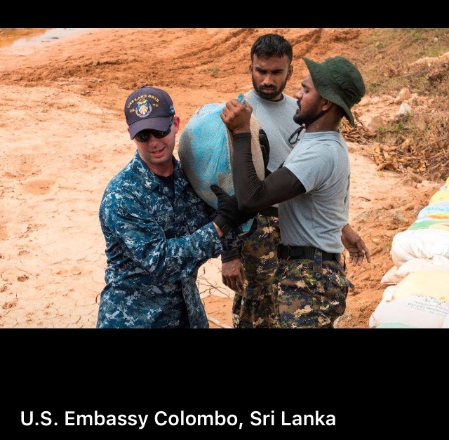
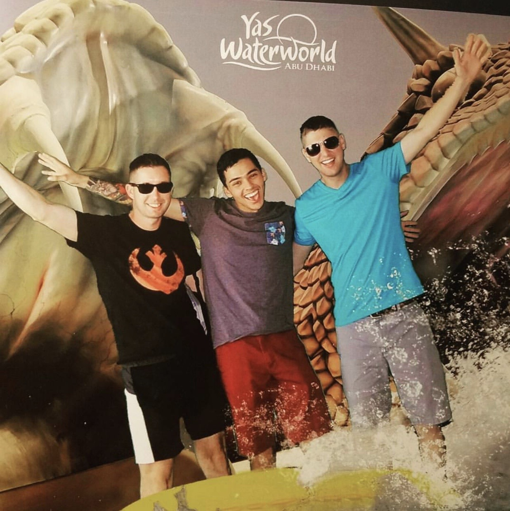

|
|
|
|
|---|
My name is Jason and I am an active duty Sailor currently stationed out of Newport, RI. I am originally from the Upstate of South Carolina and have been enlisted in the U.S Navy as a Fire Controlman Aegis (FCA) technician for close to eight years now. My Rate (job) in the Navy is one of two separate Rates that fall under the category of Advanced Electronic Computer Field. In laymen terms, I work on fire control radars and missile weapon systems which are responsible for protecting my ship and the country from would-be threats. Education wise, I am a transfer student with enough credits to be a Junior, but I have not taken a college course since the Summer of 2012. That said, this Fall I decided that I wanted to go back to school and I switched my major from Business Administration to Computer Science. I believe that a Computer Science degree would be more advantageous to me considering my current career path and the experience I have received while serving in the Navy. I plan to utilize a Computer Science degree to better perform my current job and utilize it to increase my job opportunities after I separate from the service.
I’ve been deployed around the world and stationed all over the country for almost 8 years now, so I try to take advantage of the little free time that I get and spend it with friends and family. The Navy is not just my career, it is my life, and I enjoy it and take pride in it. I owe the Navy a great deal for all the opportunities and experiences that have been given to me. The Navy has given me a unique opportunity to explore the world which has resulted in giving me a new appreciation of what I have. I feel very fortunate and blessed knowing what I know and after seeing what I have seen these past 8 years. Besides being a Sailor 24/7, I enjoy spending time at home playing video games and staying healthy by going to the gym.
For more insight into my life, check out my Facebook profile.
|  |  |